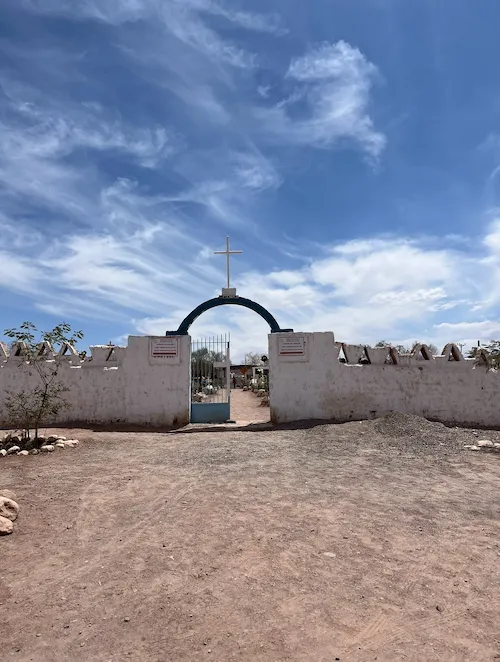
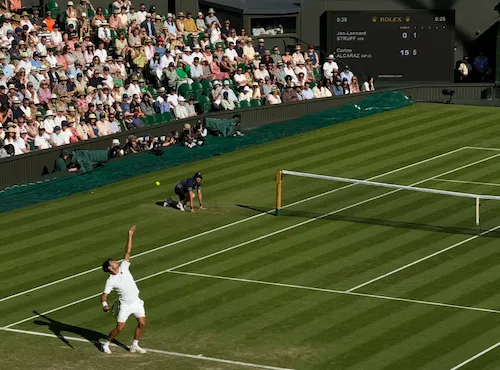
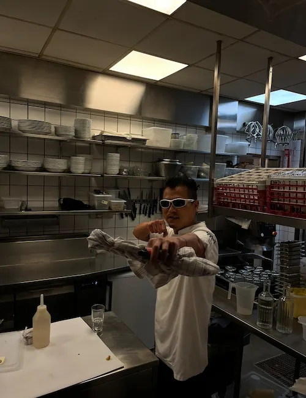
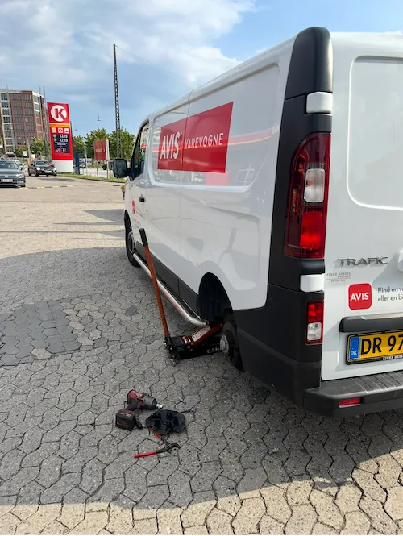

GALLERI


Theme No. 2. DE SMÅ TING

Theme No. 3. DER VAR ENGANG

Theme No. 4. PAS PÅ OS
Theme No. 5. PÅ HOVEDE

Theme No. 6. FOR ENDEN AF REGNBUEN

Theme No. 7. FODSPOR

Theme No. 8. SKRÆMMENDE

Theme No. 9. SMIL PÅ LÆBEN

Theme No. 10. NÅR LYSET FALDER

Theme No. 11. DEN NØGEN SANDHED

Theme No. 12. SÅ DET LIGE FØR

Theme No. 13. PASSION

Theme No. 14. ET ULIGE ANTAL

Theme No. 15. MIDNATSTIMEN

Theme No. 16. UD AF SKYGGERNE

Theme No. 17. ET SÆRLIGT STED

Theme No. 18. ENSOM

Theme No. 19. EKSTASE

Theme No. 20. UENDELIG KÆRLIGHED

Theme No. 21. FREDFYLDT

Theme No. 22. HVAD GIK GALT

Theme No. 23. ÅH NEJ...

Theme No. 24. SIDST, MEN IKKE MINDST